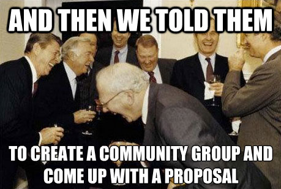

Rocky start

So we made...
Use cases

Art Direction
Design breakpoints
@media all and (max-width: 16em) { … }
@media all and (max-width: 32em) { … }
@media all and (max-width: 41em) { … }
Matching media features and media types
Monochrome
Orientation
Relative units
API to manipulate sources
- Canvas
getUserMedia()- Media Capture
Image formats
- WebP
- JPEG-XR
- Future Format
9 Requirements
1
Match image sources with media queries - update the source of an image dynamically.
2
Degrade gracefully.
3
Be accessible
(text fallback, ARIA-compatible).
4
No server-side processing. But can still work with content negotiation.
5
Simple API.
- What's the current source?
- What media matched?
- Add, remove, and update image sources.
- Events.
6
Support art direction
(not just resolution switching).
7
Breakpoint friendly.
8
Support emerging formats.
9
Polyfillable.
The <picture> Element
<picture width="500" height="500">
<source media="(min-width: 45em)"
src="large.jpg">
<source media="(min-width: 18em)"
src="med.jpg">
<source src="small.jpg">
<img src="small.jpg" alt="">
<p>Accessible text</p>
</picture>
Live Demo
What about the srcset attribute?
| Requirement | Picture | srcset |
|---|---|---|
| Match MQ & Update dynamically | ✓ | ✗ |
| Degrade gracefully | ✓ | ✓ |
| Accessible. | ✓ | ✓ |
| No server-side processing | ✓ | ✗ |
| Simple API | ✓ | ✗ |
| Support art direction | ✓ | ✓ |
| Breakpoint friendly | ✓ | ✗ |
| Greacefully support new formats | ✓ | ✗ |
| Polyfillable | ✓ | ✓ |
Lets merge them!
<picture width="500" height="500">
<source media="(min-width: 45em)"
srcset="large-1.jpg 1x, large-2.jpg 2x">
<source media="(min-width: 18em)"
srcset="med-1.jpg 1x, med-2.jpg 2x">
<source srcset="small-1.jpg 1x, small-2.jpg 2x">
<img src="small-1.jpg" alt="">
<p>Accessible text</p>
</picture>